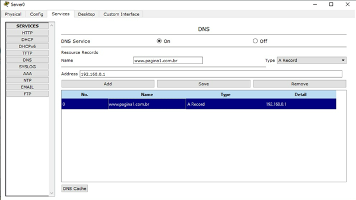
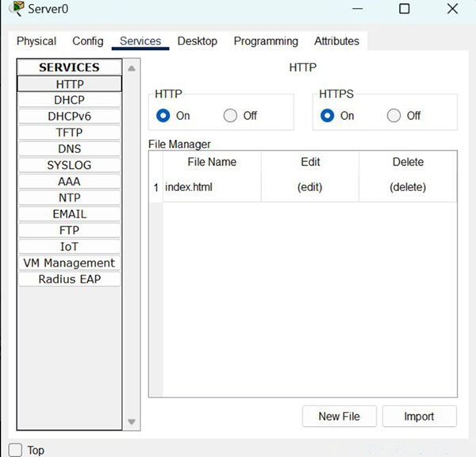
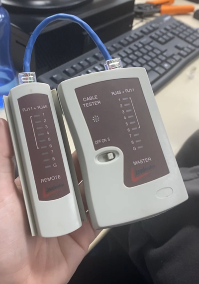
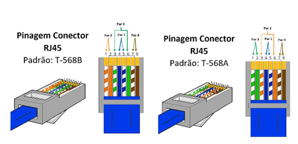

Fundamentos de Redes
Roteador
O roteador é um dispositivo de rede que conecta diferentes redes, como uma LAN à internet. Ele encaminha dados entre essas redes, atribui endereços IP e gerencia o tráfego de informações, garantindo a comunicação eficiente e segura.
Host
Um host é qualquer dispositivo conectado à rede, como computadores, laptops ou impressoras. No Packet Tracer, os hosts podem ser configurados com endereços IP, e sua função é enviar ou receber pacotes de dados pela rede.
Cabo de conexão
O cabo de conexão é utilizado para ligar dispositivos em uma rede, como servidores, switches e hosts. Ele permite a troca de dados entre os dispositivos, sendo os tipos mais comuns o cabo de par trançado e a fibra óptica.
Switches
O switch é um dispositivo de rede que conecta vários dispositivos dentro de uma mesma rede local (LAN). Ele opera na camada 2 do modelo OSI, fazendo com que a comunicação entre dispositivos seja eficiente, enviando pacotes somente para o dispositivo de destino.
Servidor
O servidor é um dispositivo que fornece serviços para outros dispositivos na rede, como compartilhamento de arquivos, websites, ou até serviços de e-mail.
Configurações do Servidor:
DNS:
O DNS (Domain Name System) é um sistema responsável por traduzir nomes de domínio legíveis, como www.exemplo.com, para endereços IP numéricos, como 192.168.1.1, que são utilizados para localizar servidores na internet. Essencialmente, o DNS atua como uma "agenda telefônica" da internet, permitindo que os usuários acessem websites utilizando nomes fáceis de lembrar, em vez de números complicados.

DHCP:
O DHCP (Dynamic Host Configuration Protocol) é um protocolo de rede que permite que dispositivos em uma rede recebam automaticamente um endereço IP e outras configurações necessárias, como máscara de sub-rede e gateway padrão. Isso elimina a necessidade de configurar manualmente os endereços IP em cada dispositivo, facilitando a gestão de redes e garantindo que cada dispositivo tenha um endereço único e válido para se comunicar na rede.

Servidor HTTP:
Um servidor HTTP é um tipo de servidor de rede que lida com requisições de clientes, geralmente navegadores de internet, e envia respostas de volta para esses clientes. Ele utiliza o protocolo HTTP (HyperText Transfer Protocol) para facilitar a comunicação entre clientes e servidores. Quando um usuário acessa um site, por exemplo, o navegador faz uma requisição HTTP ao servidor, que então processa essa solicitação e retorna os dados (como páginas web, imagens, etc.) para o navegador, que os exibe para o usuário.

Conceito de Servidor:
Um servidor é um sistema de computador ou dispositivo que fornece serviços, recursos ou dados para outros computadores, chamados de clientes, em uma rede. Ele pode ser configurado para realizar várias funções, como hospedar sites, armazenar arquivos, gerenciar e-mails, ou executar aplicações. Os servidores geralmente funcionam 24/7 e estão projetados para lidar com múltiplas requisições simultâneas, garantindo a disponibilidade dos serviços para os usuários ou dispositivos conectados. Eles podem ser físicos (hardware dedicado) ou virtuais (emulando servidores em uma infraestrutura de nuvem).
Crimpagem:
A crimpagem de cabos de rede é o processo de preparar e fixar os fios em um conector RJ45 para garantir conexões estáveis e eficientes em redes. Utilizando um alicate de crimpagem, o cabo é cortado no tamanho desejado, e os fios são organizados conforme os padrões T568A ou T568B. O alicate pressiona os fios contra os pinos do conector, garantindo uma conexão segura. Uma crimpagem bem feita é essencial para evitar falhas e garantir o bom desempenho da rede.

Cabo de Rede - Pinagem
A pinagem de um cabo de rede RJ45 define a ordem dos fios dentro do conector, seguindo os padrões T568A ou T568B. Cada fio transporta sinais elétricos para comunicação entre dispositivos. A disposição correta dos fios é crucial para garantir a eficiência e evitar falhas na rede. A escolha do padrão deve ser consistente em toda a rede para um desempenho adequado.

Condeito do Modelo OSI
O modelo OSI (Open Systems Interconnection) é um modelo teórico que define como os sistemas de comunicação em rede devem funcionar. Ele divide a comunicação em rede em sete camadas, cada uma responsável por uma função específica no processo de transmissão de dados. O objetivo do modelo é padronizar a comunicação entre sistemas, permitindo que diferentes dispositivos e protocolos se comuniquem entre si.
As sete camadas do modelo OSI são:
Conceito do TCP/IP
O modelo TCP/IP, também conhecido como suíte de protocolos da Internet, é a base da comunicação de dados em redes, como a Internet. Ele foi desenvolvido para ser flexível, robusto e capaz de interconectar diferentes tipos de redes. O modelo TCP/IP é composto por quatro camadas principais, cada uma com funções específicas: